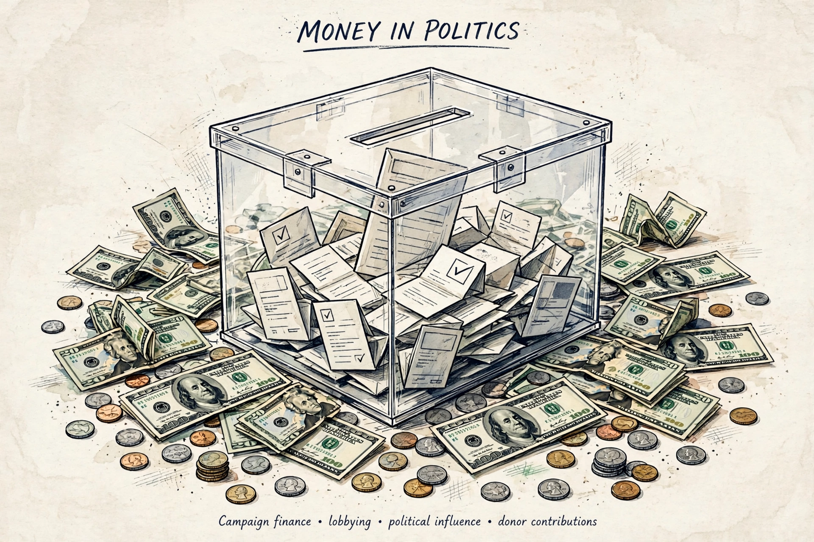

Political funding (also called political finance or campaign finance) is the money raised and spent to promote candidates, political parties and policy initiatives, and the laws that govern its flow. It covers donations to parties and candidates, membership fees, public subsidies, loans, and spending by third parties ("non-party campaigns"), and it is one of the most contested areas of democratic regulation.

Political actors raise money from private donations (large and small), membership dues, affiliated organisations such as trade unions or business associations, commercial activities, candidates' personal wealth, and state subsidies. Regulatory regimes differ widely: the United States relies heavily on private money subject to disclosure and limits; many European democracies provide substantial direct public funding to parties represented in parliament, alongside regulated private donations.
Common regulatory tools include donation caps, spending limits, disclosure requirements, bans on foreign or corporate money, and public funding designed to level the playing field and reduce dependence on wealthy donors. Weak or evaded rules enable political corruption and scandals — from the Flick affair in Germany to Italy's Tangentopoli and Japan's Recruit scandal — which repeatedly drive reform cycles.
Disputes centre on the tension between free expression (treating spending as speech, as in US jurisprudence from Buckley v. Valeo to Citizens United) and political equality (the argument that unlimited spending lets wealth dominate). Reforms such as clean elections public financing and small-donor matching attempt to reconcile the two.
See also: Campaign finance in the United States · 527 organization · Super PAC